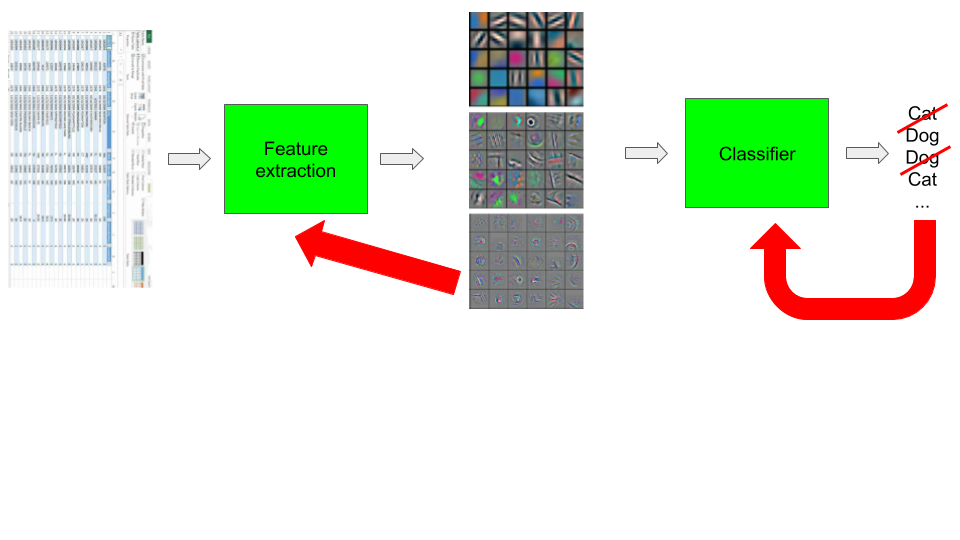

class: center, middle, title-slide count: false # Module 8a ## Embeddings <br/><br/> .bold[Marc Lelarge] --- # Deep Learning pipeline ## .red[Dataset and Dataloader] + .grey[Model] + .grey[Loss and Optimizer] = .grey[Training] ## Now: how to deal with symbolic data like ids? .center[  ] --- # One-hot encoding Encoding colors: .center.width-40[] Why not simply use: blue = 0, red = 1 and so on? What are the Pros/Cons of such a representation? -- count: false - Each axis has a meaning - Sparse, discrete representation with large dimension (size of the vocabulary). - Symbols are equidistant from each other with euclidean distance $\sqrt{2}$ for large vocabulary. --- # Embeddings Idea: project in $\mathbb{R}^d$ with $d$ much smaller than the size $n$ of the vocabulary! -- count: false More formaly, let $W\in \mathbb{R}^{n\times d}$, we define $$ \text{embedding}(x) = \text{onehot}(x) W $$ $W$ is typically randomly initialized, then tuned by backprop. $W$ are trainable parameters of the model. -- count: false - Continuous and dense representation. - Can represent a huge vocabulary in low dimension. - Axis have no meaning a priori but once trained, embedding metric can capture semantic distance. --- # Example: embeddings for movies in recommender systems .center.width-50[] PCA of embeddings for movies learned in the practical of this lesson. --- ## Embeddings in PyTorch [Sparse layers](https://pytorch.org/docs/master/generated/torch.nn.Embedding.html#torch.nn.Embedding) in PyTorch: `torch.nn.Embedding(num_embeddings, embedding_dim)` Example: creating embeddings for users ``` embedding_dim = 3 embedding_user = nn.Embedding(total_user_id, embedding_dim) input = torch.LongTensor([[1,2,4,5],[4,3,2,0]]) embedding_user(input) ``` -- count: false returns ``` tensor([[[-1.7219, 0.4682, 0.5729], [ 0.0657, -0.7046, -0.4397], [ 1.1512, 1.3380, -1.0272], [ 1.4405, 1.2945, 1.0051]], [[ 1.1512, 1.3380, -1.0272], [-0.6698, -2.1828, -0.1695], [ 0.0657, -0.7046, -0.4397], [-0.7966, -1.6769, -0.7454]]]) ``` -- count: false So now it's time to play with embeddings, [here](https://github.com/dataflowr/notebooks/blob/master/Module6/05_collaborative_filtering_empty.ipynb)! --- class: end-slide, center count: false The end.